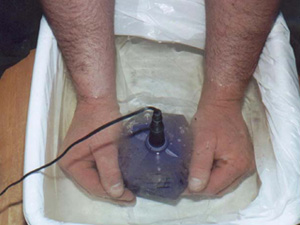
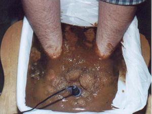

Your feet and hands are some of the most heavily used parts of your body and take a lot of wear and tear. Make them happy. Relieve stress and tension, improve nerve supply and circulation. You can even reduce pain and increase energy with our ionic SPA, allowing you to feel relaxed and new when you walk out the door.
Foot massage session $30.00
10-minute hand ionic SPA (bacteria and fungus removal)
25-minute manual massage
35-minute neck and back (chair roller) massage
Hand massage session $20.00
10-minute hand ionic SPA (bacteria and fungus removal)
15-minute manual massage
25-minute neck and back (chair roller) massage
FOOT IONIC S.P.A.
Before:

After:

HAND IONIC S.P.A.
Before:

After:

Testimonials
"I have tounge and throat cancer and was given some E-water, made by the PHUT-C and that was the first drink of water in 7 months. I am on a liquid diet through a port." Glen
"I was hit by a car and was paralized from the neck down, over time I have use of my arms. When I have the PHUT-C session done I can feel pins and needles at my waist line, I believe I will walk some day soon." DQ
"I was diagnosised with brest cancer. My first PHUT-C session within 20 minutes, the pain from the brest biopsy was gone!! Two days later, I had my right foot in one bucket, my left in another and one more for my hands, each with a PHUT-C. After 10 minutes, my right bucket was clear water, and the other two were brown. I have cancer in the left brest, not the right! I feel great and will beat this cancer." Roberta
"My daughter is a Type 1 diabetic and her blood sugar level was 271 before a 30 minute PHUT-C foot bath. Immediately after it went to 215, and an hour later it dropped to 198! the pain in her ankle disappeared too." Pattie I.
"My client was recoving from a broken bone in her foot, she was limping and in pain. After one session, she never used her crutches, and is feeling great." C.H.
"I couldn't walk; I was hopping around the house on one leg. After one session the pain was gone. My doctor told me it probably took out the lactic acid. I don't care what it did, I am pain free." L.N.
"Urinate to Eliminate Excees Weight" That is what happens when I drink "energized" water. I drink two to three liters of "energized" water everyday. I have less of an appetite, I have eliminated ten pounds of excess weight by urinating. I use the PHUT-C to energize my closed container of drinking water, using tap water in the sink that surrounds my container. Somehow the energy that the PHUT-C is creating in the tap water transposes energy into my closed container of drinking water. After about ten minutes I have to go to the bathroom and eliminate my toxins. I feel great. T.K.